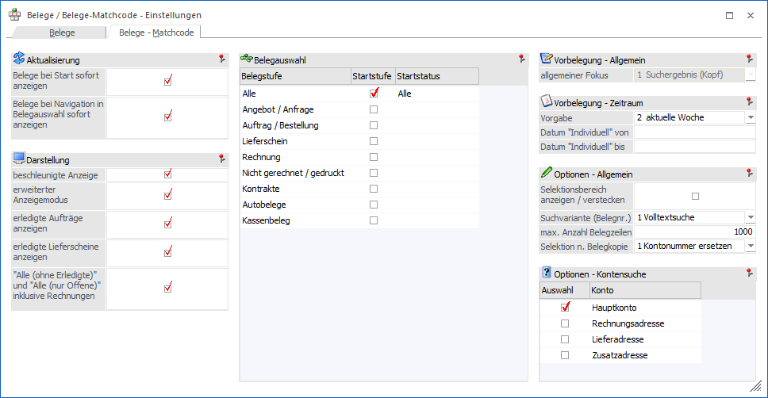
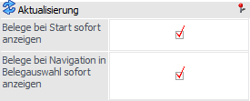
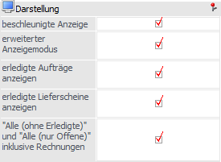
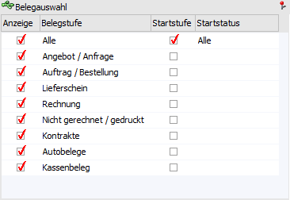
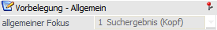
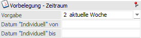
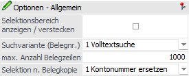
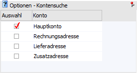

In dem Register "Belege - Matchcode" kann die Anzeige und das Programmverhalten des Fensters "Belege - Matchcode" individualisiert werden.

Aktualisierung

Ø Belege bei Start sofort anzeigen
Durch Aktivierung dieser Option wird bei dem Start des Programms "Belege - Matchcode" die Beleganzeige automatisch ausgeführt.
Ø Belege bei Navigation in Belegauswahl sofort anzeigen
Wenn diese Option aktiviert ist, so wird bei einer Anwahl eines Eintrags in der Belegauswahl sofort eine Suche, d.h. die Beleganzeige, ausgeführt. Bei Deaktivierung wird die Suche nur durch folgende Aktionen ausgelöst:
ü Button "Anzeigen" bzw. Taste F5
ü Taste Enter in der Belegauswahl
ü Doppelklick auf einen Eintrag in der Belegauswahl
Darstellung

Ø beschleunigte Anzeige
Für eine noch schnellere Aufbereitung und Anzeige der Belege kann die Option "beschleunigte Anzeige" aktiviert werden. Hierdurch werden viele Daten für die Anzeige aus dem Speicher verwendet und nicht mehr "live" ermittelt (z.B. Bezeichnung der Belegart). Der Speicher selber wird bei einem Neustart der WinLine initialisiert und bei der ersten Verwendung neu gefüllt.
Hinweis
Die beschleunigte Anzeige kann (abhängig vom Arbeitsspeicher) ca. 1000 Beleg gleichzeitig darstellen, wobei in der Belegmitte die Information "Lieferschein (Sammelbeleg)" nicht angezeigt wird.
Sollten mehr Belege gefunden werden, so wird eine Hinweismeldung ausgegeben und folgende Möglichkeiten zur Auswahl gestellt:
ü Ja
Es wird die beschleunigte
Anzeige temporär deaktiviert und die noch nicht geladenen Beleg über die nicht
beschleunigte Anzeige aufbereitet.
ü Nein
Die Suche wird abgebrochen
und alle bereits ermittelten Belege angezeigt.
ü Belege-Fenster öffnen
Es wird
das Fenster "Belege" geöffnet und dort die Suche ausgeführt.
Ø erweiterter Anzeigemodus
Für eine optimierte Darstellung der Beleg werden Informationen, welche innerhalb der Belege nicht vorliegen, für die Anzeige hinzugeladen (z.B. der Name der Belegart). Wenn dieses nicht gewünscht ist, so kann es durch Deaktivierung der Option unterbunden werden.
Ø erledigte Aufträge anzeigen
Wird ein Auftrag / Bestellung direkt in eine Rechnung gewandelt, so existiert gemäß Datenbank nur ein Beleg, welcher beide Daten (Vorstufe und Rechnung) enthält. Durch Aktivierung der Option "erledigte Aufträge anzeigen" wird der erledigte Beleg ebenfalls im Programm "Belege - Matchcode" dargestellt.
Ø erledigte Lieferscheine anzeigen
Wird ein Lieferschein in eine Rechnung gewandelt, so existiert gemäß Datenbank nur ein Beleg, welcher beide Daten (Vorstufe und Rechnung) enthält. Durch Aktivierung der Option "erledigte Lieferscheine anzeigen" wird der erledigte Beleg ebenfalls im Programm "Belege - Matchcode" dargestellt.
Ø "Alle (ohne Erledige)" und "Alle (nur Offene)" inklusive Rechnungen
Durch Aktivierung dieser Option werden im Bereiche "Alle", unter den Unterpunkten "Alle (ohne Erledigte)" und "Alle (nur Offene)" auch gedruckte Rechnungen dargestellt.
Belegauswahl

Die folgenden Einstellungen werden nur berücksichtigt, wenn der Matchcode mit allen Belegstufen geöffnet wird, d.h. es wird nicht automatisch eingeschränkt.
Ø Startstufe
An dieser Stelle kann definiert werden, welche Belegstufe in der Belegauswahl - bei Start des Programms "Belege - Matchcode" - ausgewählt sein soll.
Ø Startstatus
In dieser Spalte wird für die Startstufe definiert, welcher Belegstatus in der Belegauswahl - bei Start des Programms "Belege - Matchcode" - ausgewählt sein soll.
Vorbelegungen - Allgemein

Ø allgemeiner Fokus
An dieser Stelle kann definiert werden, an welcher Stelle der Fokus - bei Start des Programms "Belege - Matchcode" - liegen soll.
Hinweis
Diese Einstellung ist nur nutzbar, wenn die Option "Belege bei Start sofort anzeigen" nicht aktiviert wurde.
Vorbelegung - Zeitraum

Ø Zeitraum
Mit Hilfe der Auswahl "Vorgabe" kann der Zeitraum ausgewählt werden, in welchem das Belegdatum der anzuzeigenden Belege liegen soll. Diese Einstellung dient als Standardeinstellung für den Start des Programms "Belege - Matchcode".
Ø Datum "Individuell" von / Datum "Individuell" bis
In diese Felder kann der Zeitraum der Vorgabe "Individuell" hinterlegt werden.
Optionen

Ø Selektionsbereich anzeigen / verstecken
Durch Aktivierung dieser Option kann definiert werden, dass der Selektionsbereich bei Start des Programms "Belege - Matchcode" nicht angezeigt wird. Eine optionale Anzeige während des Arbeitens ist jederzeit möglich.
Ø Suchvariante (Belegnr.)
An dieser Stelle kann die Suchvariante des Selektionsfelds "Belegnummer" definiert werden, d.h. wie nach der Belegnummer gesucht werden soll, wenn die Anzeige gestartet wurde (die Autovervollständigung ist von dieser Einstellung ausgenommen). Folgende Varianten stehen zur Verfügung:
ü 1 - Volltextsuche (Standard)
Es
erfolgt eine Volltextsuche, d.h. die gesamte Belegnummer wird durchsucht.
ü 2 - Linksbündig
Die
Belegnummernsuche erfolgt linksbündig.
ü 3 - Rechtsbündig
Die
Belegnummernsuche erfolgt rechtsbündig.
ü 4 - Ist gleich
Die Belegnummer
des Suchergebnisses muss exakt mit der Nummer der Selektion übereinstimmen.
Ø max. Anzahl Belegzeilen
An dieser Stelle kann für den Zeitraum "12 - Alle" die Anzahl der maximal anzuzeigenden Belege hinterlegt werden.
Hinweis
Bei Nutzung der Option "beschleunigte Anzeige" wird die hier hinterlegte Anzahl ignoriert.
Ø Selektion n. Belegkopie
Durch das Kopieren eines Belegs wird standardmäßig (Ausnahme "Kontrakte") ein Beleg des Typs "nicht gerechnet / gedruckt" erzeugt. Mit Hilfe der Auswahlliste "Selektion n. Belegkopie" kann definiert werden, wie die nachfolgende Anzeige erfolgen soll:
ü 1 - Kontonummer ersetzen
Nach
der Belegkopie wird automatisch in die Belegauswahl "Nicht gerechnet / gedruckt"
gewechselt, die Zielkontonummer in das Selektionsfeld "Konto" gesetzt und die
Anzeige aktualisiert. Alle weiteren Selektionen bleiben erhalten.
ü 2 - Kontonummer ersetzen und
weitere Selektionen entfernen
Nach der Belegkopie wird automatisch in die
Belegauswahl "Nicht gerechnet / gedruckt" gewechselt, die Zielkontonummer in das
Selektionsfeld "Konto" gesetzt, der Zeitraum auf die Vorgabe "1 - heute"
geändert und die Anzeige aktualisiert. Alle weiteren Selektionen werden
entfernt.
ü 3 - Alle Selektionen
entfernen
Nach der Belegkopie wird automatisch in die Belegauswahl "Nicht
gerechnet / gedruckt" gewechselt, der Zeitraum auf die Vorgabe "1 - heute"
geändert und die Anzeige aktualisiert. Alle weiteren Selektionen werden
entfernt.
ü 4 - Selektionen nicht
ändern
Nach der Belegkopie wird automatisch in die Belegauswahl "Nicht
gerechnet / gedruckt" gewechselt und die Anzeige aktualisiert. Alle Selektionen
bleiben erhalten.
ü 5 - Kopierbereich
erstellen
Nach der Belegkopie wird die Belegauswahl "Kopierbereich" erstellt
und in diese gewechselt. Hier werden automatisch der Ursprungsbeleg und der
Zielbeleg dargestellt.
Hinweis
Der Kopierbereich wird automatisch wieder entfernt, sobald die Anzeige durch Anwahl des Buttons "Anzeige" bzw. der Taste F5 aktualisiert wird.
Optionen - Kontensuche

Ø Auswahl
An dieser Stelle kann definiert werden, in welchen Feldern nach dem Selektionskriterium "Konto" gesucht werden soll.